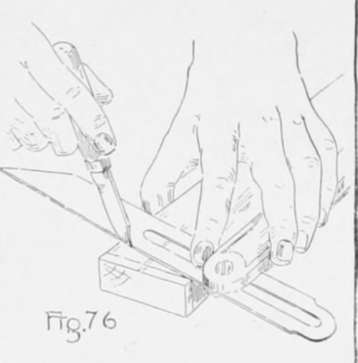

Chapter VIII. Furniture Making-Keyed Construction
Description
This section is from the book "Beginning Woodwork At Home And In School", by Clinton Sheldon Van Deusen. Also available from Amazon: Beginning Woodwork At Home And In School.
Chapter VIII. Furniture Making-Keyed Construction
The purpose of this chapter is to make clear the manner in which the principles already learned may be applied in working out simple problems in furniture construction. In this class of work it is necessary to use special care in laying out pieces that are to be in different parts of the completed piece of furniture but are to be of equal length. It will therefore be noticed that, where possible, pieces which are to be of the same dimensions are laid out together. Thought should also be given to determining where the working faces and joint sides of the various pieces are to be placed. All gaging for joints should be done from these surfaces, and all gaging with the same setting of the gage should be done at one time.
Taboret
The material required is a piece of chestnut 4' 2" long, 13 1/2" wide, and thick.'if supplied with saws to cut it up; or the lumber may be purchased cut to the following dimensions; four pieces 18"x2 3/4"x 7/8" for the legs, two pieces 14 1/2"x2 3/4"x 7/8" for the lower braces, two piece l4 1/2"x 2 l/2"x 7/8" for the upper braces, one piece 12"xl"x5/8" for the keys, and two pieces 16"x8"x7/8" for the top. There will also be needed four 1 1/2" No. 10 round-head blue screws for fastening on the top, a small bottle of liquid glue, a 2-oz. bottle of strong ammonia, and about 1 oz. of four parts boiled oil and one part hard oil finish. The following is required for the clamps: two pieces of cheap pine "two by four", each two feet long, for the main parts of the clamps, two pieces of tulip wood 13"x2½"xl¼" for the blocks of the clamps, a piece of tulip wood 13"xl¾"xl¼" for the wedges, also twelve 2¼" No. 14 round-head blue screws and twelve ⅛" washers.
If the chestnut is bought in one large piece it should be laid out with a straight-edge and pencil in the manner and to the dimensions indicated in Fig. 72. Then using the rip-saw (which has teeth sharpened across their entire width like a blunt chisel) cut on the lines running lengthwise of the grain. Many beginners have difficulty in following a line with a rip-saw, but if the saw is in good condition and as soon as the saw begins to leave the line a twisting force is exerted by the wrist in a direction to draw the saw back to the line, ability will soon be acquired to saw quite straight. The cross-cut saw (Fig. 73) should be used in sawing on the lines crosswise of the grain. This saw has teeth that are sharpened on their slanting edges.
Taboret.
The tools to be used the first time are the rip and cross-cut saws, the bevel and the handscrew.
(a) Plane each of the four pieces for the legs by the rules for planing to the length (24), width (3), and thickness (22) given in the working drawing, (Fig. 74. )
(b) Plane each of the two pieces for the lower braces by the rules for planing to length (25), width (3), and thickness (22).
(c) Plane each of the two pieces for the upper braces to width (8) and thickness (22). Then with knife and try-square draw a line across the joint side of one of these pieces about 1/8" from one end, and draw a knife line square across the working face joining with this line. On the edge formed by the working face and the side opposite the joint side, measure toward the middle of the piece Y2" from the end of the last line drawn. Place the bevel (Fig. 75), with its blade loosened, on the piece so that the beam is against the joint side, and move the bevel and adjust the blade (Fig. 70) until the edge of the blade passes through the last point located, and the end of the knife line that was made on the joint side. Now tighten the blade in this position, and with the knife, draw a line through the two points referred to. Without changing the set of the bevel, draw another line directly opposite this one, by placing the beam of the bevel against the joint side and the blade on the surface opposite the working face, the line joining with the end of the line on the joint side. Place the beam of the try-square against the working face, and draw a knife line across the side opposite the joint side, joining with the end of the line on the working face. If all of the lines have been drawn carefully this line will join with the end of the slanting line on the opposite surface, thus making a continuous knife line around the piece. Saw with the back-saw a little outside of this line, and block-plane to the line. Measure from the block-planed end on the joint side the length of the brace (25), and through the point so determined, draw a knife line square across the joint side. Without changing the set of the bevel, place the beam against the joint side and draw a knife line on the working face and the surface opposite, joining with the ends of the line on the joint side, and slanting toward the middle of the piece. Then with the try-square and knife, draw a line across the side opposite the joint side which should make a continuous line around the piece. Saw a little outside of this line and block-plane to the line. In the same manner work the piece for the other upper brace to the desired length with slanting ends.
(d) Clamp the four pieces for the legs in the vise in the following position : The working faces of the front and back pieces should be in contact with the front and back jaws of the vise respectively, and the working faces of the two middle pieces should be in contact with each other. The joint sides of all four pieces should be on top, and should be on the same level. Use the try-square, as in Fig. 77, to bring the ends of all four pieces even. Now from one end, measure on the joint side of one of the legs the distances the lower (26) and the upper ,27) edges of the mortise' are to be from the bottom of the leg. From the opposite end measure the width (8) of the upper brace. Now placing the try-square as in Fig, 77, make light knife marks even with these points on each edge that the blade of the try-square touches.
Continue to:
- prev: Chiseling And Planing. Continued
- Table of Contents
- next: Furniture Making-Keyed Construction. Part 2